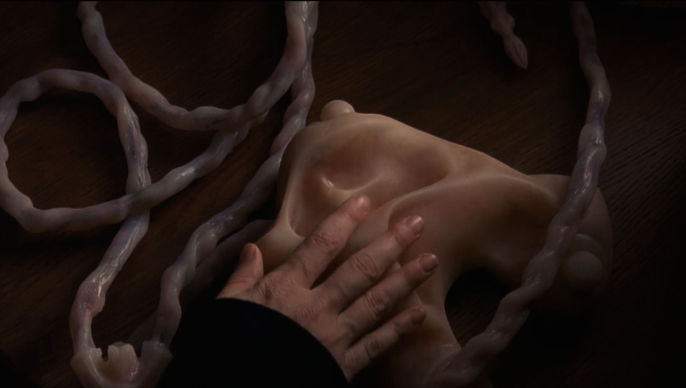
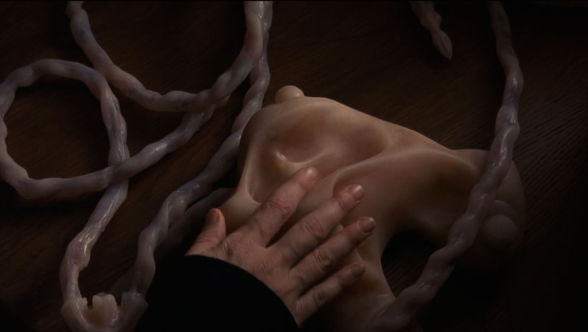

PIGMENTED CAVEWOMAN (looking up):
What is this intrusive scent?
CRYSTAL DUSTED WITCH:
I guess we have entered Gardeners territory now.
SILK GARDENER (Moving her body towards Gaia):
You know me, mother, I will not be the one telling you the end of nature has dawn to mankind. But I will be the one telling you that its ancient meaning is obsolete and nature needs a redefinition.
CRYSTAL DUSTED WITCH:
I believe this too, mother.
PIGMENTED CAVEWOMAN:
As do I. Yet in my own way -
SILK GARDENER (Gracefully gestures her brother & sister to be quiet):
Gaia, we both know humans are neglecting the nature which is commonly accepted as pure and wild. And now I noticed that next to that it is also refusing to embrace the expanding wild growing right before their eyes.
Earth has been influenced by humans ever since they came into existence. For instance, when men altered the soil in North America 15,000 years ago, they influenced the landscape in such a matter that enormous animals such as our sublime mastodon became extinct and with that the entire ecosystem changed. Grasslands turned into forests and the forests changed their vegetation with all its mighty trees and animals. Prehistorical humans changed the earth, just like humans are currently changing it. Humans, conscious or unconsciously, have always been terra-formers. But today on a different scale, and Earth will have to adjust to it in a different manner.
Geologically and ecologically humans have completely influenced the planet. Until the extent that the air they breathe has been altered and with that every millimeter of terra is directly influenced by them. Where is this placing you? Is that also what you were asking yourself, mother?
I think humans need a dramatic new perception of nature. The current definition of nature seems to be those rare unstirred pompous landscapes. This definition is outdated and simply not feasible in this new epoch. To preserve endless untouched forests dazzling in humanized landscapes is unrealistic. However, not only these seemingly intact angelic places, that remind humans of an earth without their existence, are to be called nature. Let me start by defining what nature is not: all which is ruled by impermeable surfaces. There where concrete flows and bricks are built. And then suddenly, eyes are opened and nature is everywhere. Everywhere around their urban homes: a new urban green. There where life thrives.5 All life. Abandoned and unmanaged spaces in the middle of the cities radiate with numerously biodiversity. Secret wilderness.
Remember how we both carefully watched over the shoulder of Ilkka Hanski, the ecologist from Finland? How he decided to stop cutting the grass, or for that matter engage in any gardening in his backyard, for a year?6 I recall his garden growing completely out of control, and after he examined his new oasis, it turned out more than 373 plants and animals were living on this little piece of earth - two of which were endangered species. His garden had completely run wild and the effect could not have been more exciting.
But humans seem to be more amazed by a certain type of spectacular and distant nature. Someplace far else than their backyard or rooftop, it simply makes me bored. For example, the Calanques in South-France, which is infamous for its difficulty in accessibility, or Yellowstone National Park in the United States, which is known for its geysers and hot springs but needs a careful maintenance to be able to meet the visitor’s expectations.
Maintaining these places, like national parks, is done rigidly and carefully. Because of that, these ecosystems are exactly growing like they did hundreds of years ago. A conservative restoration takes place, where all the original flora and fauna is being kept intact. Yet the world and its climate is changing, and more and more these protected areas seem to look like historical imitation models to me. Nature never grows backwards.
While these places painstakingly are being kept intact, biodiversity is flourishing in more unexpected places. Perhaps you did not follow his walk, mom, because you were already weakening. But there has been an ecologist last year, Kevin Matteson, who simply walked a straight line through New York City and counted the amount of bees he could find. Cities are stacked with people, and people love flowers, consequently bees find plenty of space to nest in metropolitan areas. He examined every flower and every bee he could find on his way and discovered 227 species of bee.7
The result of this promenade and Hanski’s garden give me enough reason to believe mankind should not latch tightly on to established ecosystems in order to augment the biodiversity of the planet. Rather, they should know exactly when and where to release nature in unexpected places.
Yet only letting go of control is not what I suggest. To start with some interventions that need to be done in the realm of invasion biology.8 Unfortunately, it seems this topic stirs up some commotion.
I understand the resistance towards the subject, since history has showed us how it has not always been a success. Invasion biology has been done for thousands of years by mankind, bringing species from one side of the planet to the other. Species were being put out of their rightful context and this resulted in small scale exotic invasions such as the South American Coypu in Europe, or in tremendous catastrophes such as the Black Dearth of medieval Europe. These plagues can be called ecological explosions, in which a bursting of uncontrollable growth of one species can have an unbelievable effect. But this effect could also be positive.
There is a common idea that the animals, plants and fungi which are originally living in a place are surely the best options, since these are the organisms which you, mom, choose to place there. Here the conservative idea of wilderness is present and results in a lack of questioning and fear of systematization. Invasion biology could bring balance, the thriving of life in more inorganic choice of areas. Assisted species migration could flourish the soil when done meticulously and could decrease the current loss of biodiversity. The diabolic nature mankind projects on alien species says more about how they think about themselves and their fear of change, than about the actual nature of the alien species. Hatred for the foreign and unfamiliar. Real nature often is random, not a perfect stable balance. It is constantly transforming. Change is the norm, and alien species are just like any other species part of this.
A good example for a man-made controversial ecosystem in which countless alien species have been introduced is the volcano Ascension Island, in the South Atlantic. Ascension Island is a place where for the last 200 years almost all the vegetation has been introduced, as bits and pieces from around the world joined together. Some vegetation settled, other creatures failed, and a flourishing ecosystem commenced. People proclaim it to be the most cosmopolitan tropical forest in the world. Although it feels like a primeval place, untouched by mankind because of its primitive beauty, where among others introduced animals such as mammals, rabbits, feral sheep, cows and donkeys live.
Ascension Islands shows that humans classic association of alien species being bad is not always true. Instead, they should applaud the dynamic stream alien species can bring to ecologies and fully take upon them the role as terra-formers.
There is a visual phenomenon I would like to mention, that illustrates humans as terra-formers perfectly. It is the systematization of nature in natural history museums. It seems to be a grand paradox: nature unnaturally structuralized in a geometric three-dimensional grid. Divisions, subdivisions, classifications. But it is embodying opportunities to explore, comprehend and penetrate the wonders of your soil, mother. For example, in the Natural History Museum in Geneva, divisions between collections of minerals, insects, regional fauna, tropical animals and geosciences have been made. Animals are being placed on pedestals, behind glass windows, on Styrofoam trees and numbered by little cards next to them. It is exactly this structuralizing which should be embraced. Untouched nature is antiquated, the new wild will flourish by introduction of invasion biology and on urban ground affected by humans.
ACT III
THE CAVEWOMAN


5 Marris, Emma, 2011: Rambunctious Garden: Saving Nature in a Post-Nature World. Bloomsbury
6 Chambers, Neil. B, 2011: Urban Green: Architecture for the Future. Firsttion: St. Martin’s Press
7 Marris, Emma, 2011: Rambunctious Garden: Saving Nature in a Post-Nature World. Bloomsbury
8 Pearce, Fred, 2016: The New Wild. Beacon Press


 
